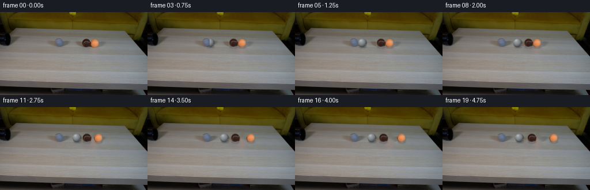
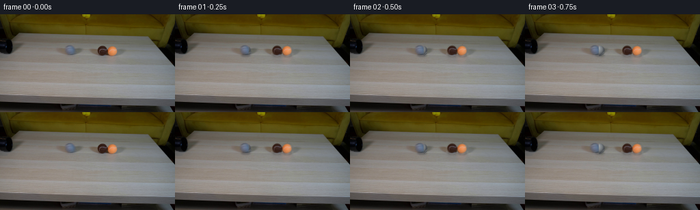

CODING AGENTS AS PIXEL WORLD MODELS
traex/DeepSeek-V4.1-Flash · 0029
点击播放 · 原生 RGB 像素
逐轮保存的候选
回放视频、检查图与代码变化。
每份候选均可单独播放。实际图片检查记录在下方工具轨迹中。
候选 01播放与检查图
点击播放 · 原生 RGB 像素


展开代码变化
--- 上一保存版本
+++ 本次保存版本
@@ -0,0 +1,227 @@
+from pathlib import Path
+
+import cv2
+import numpy as np
+from PIL import Image
+
+import artifact_io
+
+
+ROOT = Path(__file__).resolve().parent
+WIDTH, HEIGHT = 256, 144
+FRAME_COUNT = 20
+FPS = 4.0
+
+# Scene geometry measured from first_frame.png.
+GREY_START = np.array([102.4, 53.7])
+BROWN_START = np.array([149.0, 53.7])
+ORANGE_START = np.array([163.8, 53.7])
+BALL_RADIUS = 7.7
+PIPE_MOUTH_X = 107.4
+
+
+def circle_alpha(size, center, radius):
+ yy, xx = np.mgrid[:size, :size].astype(np.float32)
+ distance = np.hypot(xx - center[0], yy - center[1])
+ return np.clip(radius + 0.55 - distance, 0.0, 1.0)
+
+
+def source_sprite(image, center, radius):
+ """Crop a ball from the source and give it a clean, antialiased silhouette."""
+ size = 19
+ cx, cy = int(round(center[0])), int(round(center[1]))
+ x0, y0 = cx - size // 2, cy - size // 2
+ rgb = image[y0:y0 + size, x0:x0 + size].copy()
+ alpha = circle_alpha(size, (size / 2.0, size / 2.0), radius)
+ rgba = np.dstack([rgb, np.uint8(np.round(alpha * 255))])
+ return rgba
+
+
+def grey_ball_sprite():
+ """Procedurally shade a fuzzy grey tennis ball with a rolling seam."""
+ size = 25
+ center = size / 2.0 - 0.5
+ yy, xx = np.mgrid[:size, :size].astype(np.float32)
+ u = (xx - center) / BALL_RADIUS
+ v = (yy - center) / BALL_RADIUS
+ rr = u * u + v * v
+ inside = rr <= 1.0
+ z = np.sqrt(np.clip(1.0 - rr, 0.0, 1.0))
+
+ light = np.array([-0.48, -0.64, 0.60], dtype=np.float32)
+ light /= np.linalg.norm(light)
+ diffuse = np.clip(u * light[0] + v * light[1] + z * light[2], 0.0, 1.0)
+ diffuse = diffuse ** 0.82
+
+ # Soft ambient occlusion at the rim and a restrained upper-left highlight.
+ rim = np.clip((1.0 - z) * 2.0, 0.0, 1.0)
+ base = np.empty((size, size, 3), dtype=np.float32)
+ base[..., 0] = 94.0 + 65.0 * diffuse - 24.0 * rim
+ base[..., 1] = 98.0 + 66.0 * diffuse - 24.0 * rim
+ base[..., 2] = 101.0 + 65.0 * diffuse - 23.0 * rim
+
+ spec = np.clip((u * -0.36 + v * -0.58 + z * 0.73), 0.0, 1.0) ** 18
+ base += spec[..., None] * np.array([36.0, 37.0, 38.0])
+
+ # A projected tennis-ball seam. Its phase is advanced by the rolling angle.
+ theta = np.arctan2(v, u)
+ seam_curve = z - 0.50 * np.sin(2.0 * theta + 0.25)
+ seam = inside & (np.abs(seam_curve) < 0.075)
+ base[seam] = base[seam] * 0.56 + np.array([185.0, 186.0, 181.0]) * 0.44
+
+ grain = np.sin(xx * 8.7 + yy * 13.1) * 2.0
+ base += grain[..., None]
+ base = np.clip(base, 0.0, 255.0)
+
+ alpha = circle_alpha(size, (center, center), BALL_RADIUS)
+ rgba = np.dstack([np.uint8(np.round(base)), np.uint8(np.round(alpha * 255))])
+ return rgba
+
+
+def clean_plate(image):
+ """Remove the two resting balls while preserving the surrounding table."""
+ mask = np.zeros((HEIGHT, WIDTH), dtype=np.uint8)
+ for center in (BROWN_START, ORANGE_START):
+ cv2.circle(mask, tuple(np.round(center).astype(int)), 10, 255, -1)
+ bgr = cv2.cvtColor(image, cv2.COLOR_RGB2BGR)
+ repaired = cv2.inpaint(bgr, mask, 4, cv2.INPAINT_TELEA)
+ return cv2.cvtColor(repaired, cv2.COLOR_BGR2RGB)
+
+
+def add_shadow(canvas, center, opacity=0.23):
+ shadow = np.zeros((HEIGHT, WIDTH), dtype=np.float32)
+ cv2.ellipse(
+ shadow,
+ (int(round(center[0])), int(round(center[1] + 6.1))),
+ (7, 2),
+ 0,
+ 0,
+ 360,
+ 1.0,
+ -1,
+ cv2.LINE_AA,
+ )
+ shadow = cv2.GaussianBlur(shadow, (0, 0), 1.05)
+ canvas *= (1.0 - opacity * shadow)[..., None]
+
+
+def paste_sprite(canvas, rgba, center, clip_left=None):
+ sprite_h, sprite_w = rgba.shape[:2]
+ top_left = np.array([center[0] - sprite_w / 2.0, center[1] - sprite_h / 2.0])
+
+ # Render into a small destination window for a clean subpixel translation.
+ x0 = int(np.floor(top_left[0])) - 1
+ y0 = int(np.floor(top_left[1])) - 1
+ x1 = x0 + sprite_w + 3
+ y1 = y0 + sprite_h + 3
+ x0c, y0c = max(0, x0), max(0, y0)
+ x1c, y1c = min(WIDTH, x1), min(HEIGHT, y1)
+ if x1c <= x0c or y1c <= y0c:
+ return
+
+ matrix = np.array(
+ [[1.0, 0.0, top_left[0] - x0c], [0.0, 1.0, top_left[1] - y0c]],
+ dtype=np.float32,
+ )
+ warped = cv2.warpAffine(
+ rgba,
+ matrix,
+ (x1c - x0c, y1c - y0c),
+ flags=cv2.INTER_LINEAR,
+ borderMode=cv2.BORDER_CONSTANT,
+ borderValue=(0, 0, 0, 0),
+ )
+ alpha = warped[..., 3:4].astype(np.float32) / 255.0
+ if clip_left is not None:
+ yy, xx = np.mgrid[y0c:y1c, x0c:x1c]
+ alpha *= np.clip(xx.astype(np.float32) - clip_left + 0.5, 0.0, 1.0)[..., None]
+
+ roi = canvas[y0c:y1c, x0c:x1c]
+ canvas[y0c:y1c, x0c:x1c] = roi * (1.0 - alpha) + warped[..., :3] * alpha
+
+
+def grey_position(t):
+ release = 0.10
+ impact = 2.17
+ if t <= release:
+ return GREY_START.copy()
+ contact_x = BROWN_START[0] - 2.0 * BALL_RADIUS
+ if t >= impact:
+ return np.array([contact_x, GREY_START[1]])
+
+ # Smooth acceleration out of the pipe, approaching a constant roll speed.
+ tau = 0.35
+ dt = t - release
+ span = impact - release
+ total_distance = contact_x - GREY_START[0]
+ speed_scale = total_distance / (span - tau * (1.0 - np.exp(-span / tau)))
+ distance = speed_scale * (dt - tau * (1.0 - np.exp(-dt / tau)))
+ return np.array([GREY_START[0] + distance, GREY_START[1]])
+
+
+def moving_positions(t):
+ impact = 2.17
+ if t <= impact:
+ return BROWN_START.copy(), ORANGE_START.copy()
+ dt = t - impact
+ brown_speed, orange_speed = 2.5, 11.8
+ brown_drag, orange_drag = 0.23, 0.42
+ brown_travel = brown_speed * dt - 0.5 * brown_drag * dt * dt
+ orange_travel = orange_speed * dt - 0.5 * orange_drag * dt * dt
+ return (
+ np.array([BROWN_START[0] + max(0.0, brown_travel), BROWN_START[1]]),
+ np.array([ORANGE_START[0] + max(0.0, orange_travel), ORANGE_START[1]]),
+ )
+
+
+def make_frames():
+ source = np.asarray(Image.open(ROOT / "first_frame.png").convert("RGB"))
+ assert source.shape == (HEIGHT, WIDTH, 3)
+
+ plate = clean_plate(source)
+ brown_sprite = source_sprite(source, BROWN_START, BALL_RADIUS + 0.15)
+ orange_sprite = source_sprite(source, ORANGE_START, BALL_RADIUS - 0.10)
+ grey_sprite = grey_ball_sprite()
+
+ frames = np.empty((FRAME_COUNT, HEIGHT, WIDTH, 3), dtype=np.uint8)
+ frames[0] = source
+ for index in range(1, FRAME_COUNT):
+ t = index / FPS
+ canvas = plate.astype(np.float32)
+ grey = grey_position(t)
+ brown, orange = moving_positions(t)
+
+ # Draw the trailing objects first and the foreground pair last.
+ if grey[0] > PIPE_MOUTH_X - BALL_RADIUS:
+ add_shadow(canvas, grey, opacity=0.18)
+ paste_sprite(canvas, grey_sprite, grey, clip_left=PIPE_MOUTH_X)
+ add_shadow(canvas, brown, opacity=0.20)
+ add_shadow(canvas, orange, opacity=0.20)
+ paste_sprite(canvas, brown_sprite, brown)
+ paste_sprite(canvas, orange_sprite, orange)
+
+ frames[index] = np.clip(np.round(canvas), 0, 255).astype(np.uint8)
+
+ return frames
+
+
+def main():
+ (ROOT / ".tmp").mkdir(exist_ok=True)
+ frames = make_frames()
+ artifact_io.save(frames, ROOT)
+
+ # A directly playable RGB movie is useful alongside the contract artifacts.
+ writer = cv2.VideoWriter(
+ str(ROOT / "video.mp4"),
+ cv2.VideoWriter_fourcc(*"mp4v"),
+ FPS,
+ (WIDTH, HEIGHT),
+ )
+ if writer.isOpened():
+ for frame in frames:
+ writer.write(cv2.cvtColor(frame, cv2.COLOR_RGB2BGR))
+ writer.release()
+
+
+if __name__ == "__main__":
+ main()
可观测工具轨迹
实际执行的命令与返回图片。
命令 1exit 0
/bin/bash -c "pwd && rg --files -g 'prompt.txt' -g 'GENERATION_RULES.md' -g 'first_frame.png' -g '"'!*.mp4'"' -g '"'!*.webm'"'"
命令 2exit 0
/bin/bash -c "git status --short && find . -maxdepth 2 -type f -printf '%p %s bytes\\n' | sort"
命令 3exit 0
/bin/bash -c "command -v ffmpeg; command -v ffprobe; python - <<'PY' import importlib.util for m in ['numpy','PIL','cv2','imageio','scipy','torch']: print(m, bool(importlib.util.find_spec(m))) PY"
命令 4exit 0
/bin/bash -c 'cat prompt.txt'
命令 5exit 0
/bin/bash -c 'cat GENERATION_RULES.md'
命令 6exit 0
/bin/bash -c "sed -n '1,240p' artifact_io.py"
命令 7exit 0
/bin/bash -c "sed -n '1,240p' player_template.html"
命令 8exit 0
/bin/bash -c "python - <<'PY'
from PIL import Image
import numpy as np
im=np.array(Image.open('first_frame.png').convert('RGB'))
print('shape',im.shape,'min/max',im.min(axis=(0,1)),im.max(axis=(0,1)))
print('mean',im.mean((0,1)),'median',np.median(im.reshape(-1,3),0))
# most common colors
u,c=np.unique(im.reshape(-1,3),axis=0,return_counts=True)
for i in np.argsort(c)[-30:][::-1]: print(c[i],u[i])
PY"命令 9exit 0
/bin/bash -c "python - <<'PY'
import cv2, numpy as np
im=cv2.imread('first_frame.png')[:,:,::-1]
Z=im.reshape(-1,3).astype(np.float32)
crit=(cv2.TERM_CRITERIA_EPS+cv2.TERM_CRITERIA_MAX_ITER,100,0.2)
K=14
_,lab,cent=cv2.kmeans(Z,K,None,crit,10,cv2.KMEANS_PP_CENTERS)
lab=lab.reshape(im.shape[:2]); cent=np.uint8(cent)
# sort by y mean
for k in np.argsort([np.where(lab==k)[0].mean() for k in range(K)]):
ys,xs=np.where(lab==k)
print(k, 'rgb',cent[k].tolist(),'n',len(xs),'x',round(xs.mean(),1),'y',round(ys.mean(),1),'bbox',xs.min(),ys.min(),xs.max(),ys.max())
# label map 64x36 dominant cluster per block
H,W=im.shape[:2]
chars='0123456789ABCD'
for y in range(0,H,4):
line=''
for x in range(0,W,4):
vals,c=np.unique(lab[y:y+4,x:x+4],return_counts=True)
line+=chars[vals[c.argmax()]]
print(line)
PY"命令 10exit 0
/bin/bash -c "python - <<'PY'
import cv2, numpy as np
im=cv2.imread('first_frame.png')
g=cv2.cvtColor(im,cv2.COLOR_BGR2GRAY)
for p2 in [8,10,12,15,18,22]:
cs=cv2.HoughCircles(g,cv2.HOUGH_GRADIENT,dp=1,minDist=8,param1=60,param2=p2,minRadius=3,maxRadius=20)
print('p2',p2, None if cs is None else np.round(cs[0],1).tolist())
PY"命令 11exit 0
/bin/bash -c "python - <<'PY'
from PIL import Image
im=Image.open('first_frame.png')
im.resize((1024,576),Image.Resampling.NEAREST).save('.tmp/first_x4.png')
# crops of likely objects
for name,box in [('balls',(105,35,190,85)),('pipe',(0,35,120,90)),('table',(0,60,256,144))]:
c=im.crop(box); c.resize((c.width*6,c.height*6),Image.Resampling.NEAREST).save(f'.tmp/{name}.png')
PY"命令 12exit 0
/bin/bash -c "python - <<'PY'
from PIL import Image
import numpy as np
im=np.array(Image.open('first_frame.png').convert('RGB')).astype(int)
# classify blocks in ROI using center pixels; 2x2 chars
for y in range(28,86,2):
s=''
for x in range(0,210,2):
p=im[y:y+2,x:x+2].mean((0,1)); r,g,b=p
mx=max(p); mn=min(p); sat=mx-mn
if mx<25: c='#' # black
elif r>g+38 and g>b+10: c='O' # orange
elif r>g+10 and g>b+3 and mx>55: c='b' # brown
elif sat<12 and mx>125: c='W' # light grey
elif sat<16 and mx>85: c='w' # grey
elif sat<18 and mx<65: c='d' # dark grey
elif r>g+8 and g>b+4: c='t' # wood/table
elif mx<65: c='.'
elif mx<105: c=','
else: c=' '
s+=c
print(f'{y:3} {s}')
PY"命令 13exit 0
/bin/bash -c "python - <<'PY'
import cv2,numpy as np
im=cv2.imread('first_frame.png')
hsv=cv2.cvtColor(im,cv2.COLOR_BGR2HSV)
# contours for saturation > 55, value > 30 in upper half
for name,mask in [
('orange', cv2.inRange(hsv,(0,80,35),(35,255,255))),
('brown', cv2.inRange(hsv,(5,35,20),(35,180,160))),
('black', cv2.inRange(hsv,(0,0,0),(180,255,35))),
('light', cv2.inRange(hsv,(0,0,120),(180,45,255))),
]:
mask=cv2.morphologyEx(mask,cv2.MORPH_CLOSE,np.ones((3,3),np.uint8))
cs,_=cv2.findContours(mask,cv2.RETR_EXTERNAL,cv2.CHAIN_APPROX_SIMPLE)
print('\\n',name)
for c in sorted(cs,key=cv2.contourArea,reverse=True)[:15]:
a=cv2.contourArea(c); x,y,w,h=cv2.boundingRect(c)
if a>=8: print('area',round(a,1),'bbox',x,y,w,h)
PY"命令 14exit 0
/bin/bash -c "python - <<'PY'
import cv2,numpy as np
im=cv2.imread('first_frame.png')
# print high-detail ascii ROI x=90..190 y=35..75 based on HSV
hsv=cv2.cvtColor(im,cv2.COLOR_BGR2HSV)
for y in range(35,75):
s=''
for x in range(85,195):
b,g,r=im[y,x]; h,ss,v=hsv[y,x]
if r>g*1.3+5 and r>55: c='O'
elif r>g+7 and g>b+3 and r>45: c='B'
elif max(b,g,r)<22: c='#'
elif max(b,g,r)<48: c='d'
elif max(b,g,r)<78: c='m'
elif max(b,g,r)<112: c='g'
elif max(b,g,r)<145: c='W'
else: c='L'
s+=c
print(f'{y:3} {s}')
PY"命令 15exit 0
/bin/bash -c "python - <<'PY'
import cv2, numpy as np
im=cv2.imread('first_frame.png')[:,:,::-1]
hsv=cv2.cvtColor(im,cv2.COLOR_RGB2HSV)
# actual orange: hue around 10-20? print pixels around bbox stats
for name,(x0,y0,x1,y1) in {'left':(125,42,155,66),'right':(150,42,180,66),'pipe':(90,40,120,65)}.items():
a=im[y0:y1,x0:x1]; h=hsv[y0:y1,x0:x1]
print(name,'mean',a.mean((0,1)).round(1),'min',a.min((0,1)),'max',a.max((0,1)), 'median',np.median(a.reshape(-1,3),0))
# dominant colors
u,c=np.unique(a.reshape(-1,3),axis=0,return_counts=True)
print(sorted(zip(c.tolist(),u.tolist()),reverse=True)[:10])
# orange mask bounds
mask=(im[:,:,0]>im[:,:,1]+30)&(im[:,:,1]>im[:,:,2]+5)&(im[:,:,0]>60)
ys,xs=np.where(mask)
print('orange all',xs.min(),ys.min(),xs.max(),ys.max())
# connected
num,lab,stats,cents=cv2.connectedComponentsWithStats(mask.astype(np.uint8),8)
for i in np.argsort(stats[1:,4])[::-1][:10]+1:
print('orange comp',stats[i].tolist(),cents[i].tolist())
PY"命令 16exit 0
/bin/bash -c "python - <<'PY'
from PIL import Image
import numpy as np
im=np.array(Image.open('first_frame.png'))
# crop relevant upper table with 4x nearest
Image.fromarray(im[30:90,60:200]).resize((840,360),Image.Resampling.NEAREST).save('.tmp/scene_crop.png')
PY"命令 17exit 0
/bin/bash -c "python - <<'PY'
import cv2, numpy as np
im=cv2.imread('first_frame.png')
g=cv2.cvtColor(im,cv2.COLOR_BGR2GRAY)
# edges at thresholds, print ROI x0-210 y25-90 with 1px but bin 2x2 max
for th1,th2 in [(20,50),(40,80),(60,120)]:
e=cv2.Canny(g,th1,th2)
print('\\nCanny',th1,th2)
for y in range(25,90,2):
s=''
for x in range(0,210,2):
n=e[y:y+2,x:x+2].sum()
s+= '#' if n>=3 else ('+' if n>=1 else ' ')
print(f'{y:3} {s}')
PY"命令 18exit 0
/bin/bash -c "python - <<'PY'
from PIL import Image
import numpy as np
im=np.array(Image.open('first_frame.png').convert('RGB')).astype(float)
# row stats and intervals dark / bright by luminance
lum=im@np.array([.2126,.7152,.0722])
for y in range(0,144,4):
a=lum[y:y+4].mean(0)
seg=[]
for cond,name in [(a<25,'D'),(a>150,'L'),(a<60,'d'),(a>115,'l')]:
m=cond; starts=np.where(np.diff(np.r_[False,m,False].astype(int))==1)[0]; ends=np.where(np.diff(np.r_[False,m,False].astype(int))==-1)[0]
if name=='D' or name=='L': seg.append(name+':'+','.join(f'{s}-{e-1}' for s,e in zip(starts,ends) if e-s>=3))
print(f'{y:3}', ' '.join(seg))
PY"命令 19exit 0
/bin/bash -c "python - <<'PY'
from PIL import Image
import numpy as np
im=np.array(Image.open('first_frame.png').convert('RGB')).astype(float)
# print exact RGB along selected rows in relevant x
for y in [40,42,44,46,48,50,52,54,56,58,60,62,64,66,68,70,72,74,76,78,80,82,84,86,88,90]:
# compress runs x 0..210 using luminance chars
vals=im[y].mean(1)
chars=' .:-=+*#%@'
s=''.join(chars[min(9,int(v/24.5))] for v in vals[:210])
print(f'{y:3} {s}')
PY"命令 20exit 0
/bin/bash -c "python - <<'PY'
from PIL import Image
import numpy as np
im=np.array(Image.open('first_frame.png').convert('RGB'))
# create diagnostic channels for ROI: red/orange; dark mask; light mask
roi=im[30:90,60:200]
a=np.zeros_like(roi)
r,g,b=roi[:,:,0].astype(int),roi[:,:,1].astype(int),roi[:,:,2].astype(int)
a[:,:,0]=np.clip((r-g-10)*5,0,255)
a[:,:,1]=np.clip((g-b-2)*3,0,255)
a[:,:,2]=np.clip((b-r+20)*3,0,255)
Image.fromarray(a).resize((840,360),Image.Resampling.NEAREST).save('.tmp/color_diag.png')
# print orange-ish coords stats
m=(r>g+15)&(g>b+2)&(r>55)
ys,xs=np.where(m)
print('orange-ish bbox',xs.min()+60,ys.min()+30,xs.max()+60,ys.max()+30)
# hue rgb saturation in region
PY"命令 21exit 0
/bin/bash -c "python - <<'PY'
from PIL import Image
import numpy as np, colorsys
im=np.array(Image.open('first_frame.png').convert('RGB')).astype(float)
for y in range(42,68):
s=''
for x in range(120,185):
r,g,b=im[y,x]; mx=max(r,g,b); mn=min(r,g,b); sat=mx-mn
h,_,_=colorsys.rgb_to_hsv(r/255,g/255,b/255)
if mx<40: c='#'
elif sat<8: c=' '
elif h<.025 or h>.96: c='R'
elif h<.07: c='O'
elif h<.14: c='Y'
elif h<.22: c='G'
elif h<.46: c='C'
elif h<.72: c='B'
elif h<.88: c='P'
else: c='M'
s+=c
print(f'{y:2} {s}')
PY"命令 22exit 0
/bin/bash -c "python - <<'PY'
import cv2, numpy as np
im=cv2.imread('first_frame.png')
# opencv x,y print intensity / rgb ROI x90:120 y35:75
for y in range(35,76):
s=''
for x in range(75,121):
b,g,r=im[y,x]
v=int(.114*b+.587*g+.299*r)
chars=' .:-=+*#%@'
s+=chars[min(9,v//26)]
print(f'{y:2} {s}')
PY"命令 23exit 0
/bin/bash -c "python - <<'PY'
import cv2,numpy as np
im=cv2.imread('first_frame.png')
g=cv2.cvtColor(im,cv2.COLOR_BGR2GRAY)
for name,roi in [('all',g),('objects',g[38:75,0:210]),('table',g[70:130,:])]:
e=cv2.Canny(roi,30,80)
lines=cv2.HoughLinesP(e,1,np.pi/180,threshold=15,minLineLength=8,maxLineGap=3)
print(name)
if lines is not None:
for l in sorted(lines[:,0],key=lambda z: -(z[2]-z[0])**2-(z[3]-z[1])**2)[:30]: print(l.tolist())
PY"命令 24exit 0
/bin/bash -c "python - <<'PY'
import cv2,numpy as np
from PIL import Image
im=cv2.imread('first_frame.png')[:,:,::-1]
# kmeans ROI around balls x120:180 y40:70
x0,y0,x1,y1=120,40,185,72
a=im[y0:y1,x0:x1]
Z=a.reshape(-1,3).astype(np.float32)
for K in [5,8,12]:
crit=(cv2.TERM_CRITERIA_EPS+cv2.TERM_CRITERIA_MAX_ITER,100,.1)
_,lab,cent=cv2.kmeans(Z,K,None,crit,20,cv2.KMEANS_PP_CENTERS)
lab=lab.reshape(a.shape[:2]); cent=np.uint8(cent)
order=np.argsort(cent.mean(1))
mp={k:'0123456789AB'[i] for i,k in enumerate(order)}
print('\\nK',K)
for i,k in enumerate(order):
ys,xs=np.where(lab==k)
print(mp[k],cent[k].tolist(),len(xs),'centroid',round(xs.mean()+x0,1),round(ys.mean()+y0,1))
for y in range(0,a.shape[0],2):
print(f'{y+y0:2}', ''.join(mp[lab[y,x]] for x in range(a.shape[1])))
PY"命令 25exit 0
/bin/bash -c "python - <<'PY'
from PIL import Image
import numpy as np
im=np.array(Image.open('first_frame.png').convert('RGB')).astype(int)
# check row/column color jumps around probable balls
# local min of green? dark objects around x130-150,y47-60 and orange x157-170
for y in range(44,64):
s=''
for x in range(115,180):
r,g,b=im[y,x]
v=(r+g+b)/3
if r>g+25 and r>80: c='O'
elif r>g+10 and r>45: c='o'
elif g>b+8 and g>40: c='y'
elif v<35:c='#'
elif v<70:c='d'
elif v<100:c='m'
elif v<125:c='g'
elif v<150:c='W'
else:c='L'
s+=c
print(f'{y} {s}')
PY"命令 26exit 0
/bin/bash -c "python - <<'PY'
from PIL import Image
import numpy as np
im=np.array(Image.open('first_frame.png').convert('RGB')).astype(int)
# segment darkish/brown/orange in ROI and output coords/color summary per row
for y in range(44,66):
vals=[]
for x in range(120,180):
r,g,b=im[y,x]
if r>g+20 and r>55:
vals.append((x,'O' if r>g+35 else 'o',tuple(im[y,x])))
elif r>g+8 and r>40:
vals.append((x,'b',tuple(im[y,x])))
if vals:
# runs
print(y, vals[:3], '...', vals[-3:], 'n',len(vals))
PY"命令 27exit 0
/bin/bash -c "python - <<'PY'
from PIL import Image
import numpy as np
im=np.array(Image.open('first_frame.png').convert('RGB'))
# Make high contrast categories whole frame every 2x2, print x ruler every 10 chars (20 px)
print(' '+''.join(str((x//10)%10) if x%10==0 else ' ' for x in range(0,256,2)))
print(' '+''.join(str(x//10%10) for x in range(0,256,2)))
for y in range(0,144,2):
s=''
for x in range(0,256,2):
p=im[y:y+2,x:x+2].reshape(-1,3).mean(0); r,g,b=p
mx=max(p); mn=min(p); sat=mx-mn; lum=.2126*r+.7152*g+.0722*b
if sat>35 and r>g+25 and g>b+8: c='O' # orange
elif sat>15 and r>g+12 and g>b+4 and lum>35: c='b' # brown
elif lum<20: c='#'
elif lum<40: c='X'
elif lum<65: c='x'
elif lum<90: c='.'
elif lum<115: c=','
elif lum<140: c=':'
elif lum<165: c='+'
elif lum<195: c='*'
else: c='@'
s+=c
print(f'{y:3} {s}')
PY"命令 28exit 0
/bin/bash -c "python - <<'PY'
from PIL import Image
import numpy as np
im=np.array(Image.open('first_frame.png').convert('RGB')).astype(int)
# detailed whole table region y=30..75, 1 char per pixel x=0..255; categories tuned
print(' '+''.join(str((x//10)%10) if x%10==0 else ' ' for x in range(0,256)))
print(' '+''.join(str(x%10) for x in range(0,256)))
for y in range(30,76):
s=''
for x in range(256):
r,g,b=im[y,x]; mx=max(r,g,b); mn=min(r,g,b); sat=mx-mn; lum=.2126*r+.7152*g+.0722*b
if sat>35 and r>g+25 and g>b+8: c='O'
elif sat>14 and r>g+10 and g>b+3 and lum>35: c='b'
elif lum<15: c='#'
elif lum<35: c='X'
elif lum<60: c='x'
elif lum<85: c='.'
elif lum<110: c=','
elif lum<135: c=':'
elif lum<160: c='+'
elif lum<190: c='*'
else: c='@'
s+=c
print(f'{y:3} {s}')
PY"命令 29exit 0
/bin/bash -c "python - <<'PY'
from PIL import Image
import numpy as np
im=np.array(Image.open('first_frame.png').convert('RGB'))
# output RGB channels quantized for scene crop as PPM? use color category diagnostic
roi=im[40:80,70:190].astype(float)
r,g,b=roi[:,:,0],roi[:,:,1],roi[:,:,2]
# visualize deviation from local grayscale: R-G red, G-B green, B-R blue with scale 4
base=roi.mean(2,keepdims=True)
out=np.clip((roi-base)*4+128,0,255).astype(np.uint8)
Image.fromarray(out).resize((960,320),Image.Resampling.NEAREST).save('.tmp/chroma.png')
# pipe edges via grayscale threshold and cv contours in x0-120 y35-70
PY"命令 30exit 0
/bin/bash -c "python - <<'PY'
import cv2,numpy as np
im=cv2.imread('first_frame.png')
g=cv2.cvtColor(im,cv2.COLOR_BGR2GRAY)
# print local gradients/edges x=0:120 y=38:68, stronger threshold 60
e=cv2.Canny(g,50,100)
for y in range(35,72):
s=''
for x in range(0,130):
if e[y,x]: c='#'
elif g[y,x]<40:c='X'
elif g[y,x]<70:c='x'
elif g[y,x]<100:c='.'
elif g[y,x]<130:c=','
elif g[y,x]<160:c=':'
else:c='+'
s+=c
print(f'{y:2} {s}')
PY"命令 31exit 0
/bin/bash -c "python - <<'PY'
import cv2, numpy as np
im=cv2.imread('first_frame.png')
# inspect circles with color/mask around likely balls via radial edge scoring; dark ball likely x139-157 y46-61, orange x157-171 y47-60
# print pixel grid at 1px x130:175 y43:65 category R=strong orange, r=warm, K=dark, .=light
for y in range(43,66):
s=''
for x in range(125,180):
b,g,r=im[y,x]
if r>g+45 and r>90:c='R'
elif r>g+20 and r>55:c='r'
elif r>g+7 and g>b+2 and r>40:c='y'
elif max(b,g,r)<30:c='K'
elif max(b,g,r)<70:c='k'
elif max(b,g,r)<110:c='d'
elif max(b,g,r)<140:c='g'
elif max(b,g,r)<170:c='W'
else:c='L'
s+=c
print(f'{y:2} {s}')
PY"命令 32exit 0
/bin/bash -c "python - <<'PY'
from PIL import Image
import numpy as np
im=np.array(Image.open('first_frame.png').convert('RGB'))
# ROI ball, edge-enhance unsharp for numeric inspection as grayscale ascii 1 char per pixel x135:175 y43:65 using luminance rank local
roi=im[43:65,130:180].astype(float)
l=roi@np.array([.2126,.7152,.0722])
chars=' .:-=+*#%@'
for yy in range(l.shape[0]):
print(f'{yy+43:2} '+''.join(chars[min(9,int(v/18))] for v in l[yy]))
PY"命令 33exit 0
/bin/bash -c "python - <<'PY'
import cv2,numpy as np
im=cv2.imread('first_frame.png')
g=cv2.cvtColor(im,cv2.COLOR_BGR2GRAY)
# Try circles ROI likely pipe + balls with different Hough params and print only upper half
for p2 in [12,14,16,18,20,22,24]:
cs=cv2.HoughCircles(g[30:80,:],cv2.HOUGH_GRADIENT,dp=1,minDist=12,param1=70,param2=p2,minRadius=4,maxRadius=15)
print(p2, None if cs is None else np.round(cs[0],1).tolist())
PY"命令 34exit 0
/bin/bash -c "python - <<'PY'
import cv2, numpy as np
im=cv2.imread('first_frame.png')
g=cv2.cvtColor(im,cv2.COLOR_BGR2GRAY)
for th in [25,35,45,55,65,75,85]:
m=((g[35:75,:130]<th)*255).astype(np.uint8)
n,lab,st,ce=cv2.connectedComponentsWithStats(m,8)
print('th',th,[x.tolist() for x in st[1:] if x[4]>10])
print('gray mouth stats')
for y in range(43,64):
print(y, g[y,90:115].tolist())
PY"命令 35exit 0
/bin/bash -c "python - <<'PY'
import cv2, numpy as np
im=cv2.imread('first_frame.png')[:,:,::-1]
# kmeans all image colors
Z=im.reshape(-1,3).astype(np.float32)
for K in [8,12,16,24]:
crit=(cv2.TERM_CRITERIA_EPS+cv2.TERM_CRITERIA_MAX_ITER,100,.2)
_,lab,cent=cv2.kmeans(Z,K,None,crit,10,cv2.KMEANS_PP_CENTERS)
lab=lab.reshape(im.shape[:2]); cent=cent.astype(int)
print('\\nK',K)
for k in np.argsort([np.where(lab==k)[0].mean() for k in range(K)]):
ys,xs=np.where(lab==k)
print(k, 'rgb',cent[k].tolist(),'n',len(xs),'x',round(xs.mean(),1),'y',round(ys.mean(),1),'bbox',xs.min(),ys.min(),xs.max(),ys.max())
PY"命令 36exit 0
/bin/bash -c "python - <<'PY'
import cv2,numpy as np
im=cv2.imread('first_frame.png')
# sharpen grayscale ball ROI and save 16x for visual maybe use ascii after adaptive threshold
roi=im[42:66,130:180]
g=cv2.cvtColor(roi,cv2.COLOR_BGR2GRAY)
for scale in [1,2,4,6]:
b=cv2.GaussianBlur(g,(0,0),1)
sh=cv2.addWeighted(g,2.2,b,-1.2,0)
_,th=cv2.threshold(sh,90,255,cv2.THRESH_BINARY)
cv2.imwrite(f'.tmp/ball_th_{scale}.png',cv2.resize(th,None,fx=scale,fy=scale,interpolation=cv2.INTER_NEAREST))
print('gray roi exact')
print(g)
PY"命令 37exit -1
/bin/bash -c "python - <<'PY'
from PIL import Image
import numpy as np
im=np.array(Image.open('first_frame.png').convert('RGB')).astype(int)
# dump rows x130-175 RGB in concise classification, char based on channel diffs; highlight orange circle region
for y in range(43,66):
print(y, ''.join('R' if im[y,x,0]-im[y,x,1]>60 else 'r' if im[y,x,0]-im[y,x,1]>25 else 'y' if im[y,x,0]-im[y,x,1]>10 else 'k' if im[y,x].max()<40 else 'd' if im[y,x].max()<75 else 'g' if im[y,x].max()<110 else 'w' if im[y,x].max()<140 else 'W' for x in range(130,176)))
PY"命令 38exit 0
/bin/bash -c "python - <<'PY'
from PIL import Image
import numpy as np
im=np.array(Image.open('first_frame.png').convert('RGB')).astype(int)
for y in [44,46,48,50,52,54,56,58,60,62,64,66,68,70]:
print('\\ny',y)
for x in range(0,201,10):
a=im[y,x:x+10]
print(f'{x:3}:{tuple(a.mean(0).round().astype(int))}',end=' ')
print()
PY"命令 39exit 0
/bin/bash -c "python - <<'PY'
from PIL import Image
import numpy as np
im=np.array(Image.open('first_frame.png').convert('RGB')).astype(int)
print('ROI x70..130 y40..65: B=blue excess, K=dark, w=normal')
for y in range(40,66):
s=''
for x in range(70,131):
r,g,b=im[y,x]; lum=.2126*r+.7152*g+.0722*b
if b-r>18 and b>60: c='B'
elif b-r>8 and b>70:c='b'
elif lum<55:c='K'
elif lum<80:c='k'
elif lum<105:c='d'
elif lum<125:c='w'
elif lum<145:c='W'
else:c='L'
s+=c
print(f'{y:2} {s}')
PY"命令 40exit 0
/bin/bash -c 'python generate.py'
命令 41exit 127
/bin/bash -c "python - <<'PY'
from PIL import Image
import numpy as np
frames=np.stack([np.array(Image.open(f'frames/{i:02d}.png')) for i in range(20)])
src=np.array(Image.open('first_frame.png'))
print('shape',frames.shape,'frame0 exact',np.array_equal(frames[0],src))
print('means',frames.mean((1,2,3)).round(2).tolist())
print('changed px vs prior',[(i,int(np.any(frames[i]"'!=frames[i-1],axis=2).sum())) for i in range(1,20)])
PY
ffprobe -v error -show_entries stream=codec_name,width,height,r_frame_rate,nb_frames,duration -of default=noprint_wrappers=1 video.mp4'命令 42exit 0
/bin/bash -c "python - <<'PY'
from PIL import Image
import numpy as np
f0=np.array(Image.open('first_frame.png').convert('RGB')).astype(int)
f1=np.array(Image.open('frames/01.png')).astype(int)
d=f1-f0
print('f0 mean',f0.mean((0,1)),'f1 mean',f1.mean((0,1)))
print('diff mean',d.mean((0,1)),'diff median',np.median(d,axis=(0,1)))
for th in [1,2,5,10,20,50]:
m=np.max(np.abs(d),2)>th
print(th,m.sum(),'region bbox',None if not m.any() else (np.where(m)[1].min(),np.where(m)[0].min(),np.where(m)[1].max(),np.where(m)[0].max()))
# top 30 diff rows
for y in np.argsort(np.abs(d).mean((1,2)))[-20:][::-1]: print('row',y,'mean diff',d[y].mean(0).round(1),'count',np.any(d[y],1).sum())
PY"命令 43exit 0
/bin/bash -c "python - <<'PY'
from PIL import Image
import numpy as np
for fi in [0,4,8,9,10,11,15,19]:
im=np.array(Image.open(f'frames/{fi:02d}.png')).astype(int)
print(f'\\nFRAME {fi} t={fi/4:.2f}')
print(' '+''.join(str(x//10%10) for x in range(80,220,2)))
for y in range(42,70,2):
s=''
for x in range(80,220,2):
p=im[y:y+2,x:x+2].reshape(-1,3).mean(0); r,g,b=p; lum=.2126*r+.7152*g+.0722*b
if r>g+35 and r>90:c='O'
elif r>g+10 and r>45 and g>b+2:c='b'
elif b-r>12 and b>55:c='B'
elif lum<35:c='#'
elif lum<60:c='X'
elif lum<85:c='x'
elif lum<110:c='.'
elif lum<135:c=','
elif lum<160:c=':'
elif lum<185:c='+'
else:c='W'
s+=c
print(f'{y:3} {s}')
PY"命令 44exit 0
/bin/bash -c "python - <<'PY'
from PIL import Image
import numpy as np
f=np.array(Image.open('frames/10.png')).astype(int)
src=np.array(Image.open('first_frame.png')).astype(int)
# compare region not under balls: x105..132 y45..62 and x178..200 y45..62
for name,(x0,y0,x1,y1) in [('left',(105,45,132,62)),('right',(178,45,200,62)),('background',(20,40,80,60))]:
a=f[y0:y1,x0:x1]; b=src[y0:y1,x0:x1]
print(name,'f',a.mean((0,1)),'src',b.mean((0,1)),'diff',np.median(a-b,axis=(0,1)), 'max',np.max(np.abs(a-b)))
# print dominant inpaint colors
for y in range(46,62):
print(y,[tuple(f[y,x]) for x in range(135,180,4)])
PY"命令 45exit 0
/bin/bash -c "python - <<'PY'
import generate, numpy as np
for t in np.arange(0,5,.25):
g=generate.grey_position(t); b,o=generate.moving_positions(t)
print(f'{t:4.2f} grey {g[0]:6.2f} brown {b[0]:6.2f} orange {o[0]:6.2f}')
PY"命令 46exit 0
/bin/bash -c "python - <<'PY'
import cv2,numpy as np
from PIL import Image
# Determine initial orange object radius via color mask centroid & extents. Print connected mask pixel bounds by columns.
im=np.array(Image.open('first_frame.png').convert('RGB')).astype(int)
r,g,b=im[:,:,0],im[:,:,1],im[:,:,2]
for thr in [10,15,20,25,30,35,40]:
m=(r-g>thr)&(g-b>3)&(r>50)
# restrict x 150:180 y40:70
mm=np.zeros_like(m);mm[40:70,150:180]=m[40:70,150:180]
ys,xs=np.where(mm)
print(thr,len(xs),(xs.min(),ys.min(),xs.max(),ys.max()) if len(xs) else None, 'centroid', (round(xs.mean(),2),round(ys.mean(),2)) if len(xs) else None)
PY"命令 47exit 0
/bin/bash -c "python - <<'PY'
from PIL import Image
import numpy as np
im=np.array(Image.open('first_frame.png').convert('RGB'))
# make 8x crop of exact 120..180 x 42..70, nearest
Image.fromarray(im[42:70,120:180]).resize((960,448),Image.Resampling.NEAREST).save('.tmp/balls_x16.png')
# pipe crop
Image.fromarray(im[38:68,70:135]).resize((1040,480),Image.Resampling.NEAREST).save('.tmp/pipe_x16.png')
PY"命令 48exit 0
/bin/bash -c "python - <<'PY'
import cv2,numpy as np
im=cv2.imread('first_frame.png')
g=cv2.cvtColor(im,cv2.COLOR_BGR2GRAY)
# For each center in ROI, score radial darkness/gradient on circle r 5..10
best=[]
for cx in range(132,175):
for cy in range(46,62):
for r in np.arange(5,10.5,.5):
th=np.linspace(0,2*np.pi,96,endpoint=False)
xs=np.clip(np.round(cx+r*np.cos(th)).astype(int),0,255); ys=np.clip(np.round(cy+r*np.sin(th)).astype(int),0,143)
# ring gradient against inner/outer local diff
vals=g[ys,xs].astype(float)
# color boundary expected lower lum for brown; orange red hue at boundary not captured
# just variance of ring gradient
score=vals.std()
best.append((score,cx,cy,r,vals.mean()))
print(sorted(best,reverse=True)[:20])
PY"命令 49exit 0
/bin/bash -c "python - <<'PY'
from PIL import Image
import numpy as np
im=np.array(Image.open('first_frame.png').convert('RGB'))
# crop likely balls region exact using high nearest scale and label coordinates not needed
# output as sixel impossible; use OCR-like array of color channels normalized per row
for y in range(45,65):
print(y, ' '.join(f'{im[y,x,0]:3}' for x in range(145,174)))
PY"命令 50exit 0
/bin/bash -c "python - <<'PY'
from PIL import Image
import numpy as np
im=np.array(Image.open('first_frame.png').convert('RGB')).astype(int)
for y in range(45,65):
print(y,' '.join(f'{im[y,x,1]:3}' for x in range(145,174)))
PY"命令 51exit 0
/bin/bash -c "python - <<'PY'
from PIL import Image
import numpy as np
im=np.array(Image.open('first_frame.png').convert('RGB')).astype(int)
for y in range(45,65):
print(y,' '.join(f'{im[y,x,2]:3}' for x in range(145,174)))
PY"命令 52exit 0
/bin/bash -c "python - <<'PY'
from PIL import Image
import numpy as np
im=np.array(Image.open('first_frame.png').convert('RGB')).astype(float)
# CIE-ish chroma of orange vs brown; compare masked values
for name,(x0,y0,x1,y1) in [('left',(142,46,156,61)),('right',(156,46,172,61))]:
a=im[y0:y1,x0:x1].reshape(-1,3)
print(name, 'median',np.median(a,0), 'mean',a.mean(0), 'min',a.min(0),'max',a.max(0))
PY"命令 53exit 0
/bin/bash -c "python - <<'PY'
from PIL import Image
import numpy as np
im=np.array(Image.open('first_frame.png').convert('RGB')).astype(int)
# coordinate ruler and exact per-row intervals with dark or orange for y45:62 x130:180
for y in range(45,62):
dark=[]; orange=[]
for x in range(130,180):
r,g,b=im[y,x]
if r<100 and g<100 and b<100: dark.append(x)
if r>g+35 and r>90: orange.append(x)
def ints(a):
if not a:return ''
out=[];s=p=a[0]
for q in a[1:]:
if q"'!=p+1: out.append((s,p));s=q
p=q
out.append((s,p));return out
print(y,'"'dark',ints(dark),'orange',ints(orange))
PY"保存候选 1 份；完成命令 53 次；可验证图片返回 0 张。原始 API 响应与完整日志保留在本地。